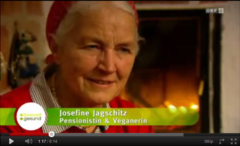

Gesundheit
Unsere Gesundheit hängt unmittelbar mit unserer Ernährung zusammen. Was wir essen, beeinflusst sowohl unseren Körper als auch unsere Psyche. Die Nahrung ist die Hauptquelle unserer körperlichen Energie und Vitalität.
So gilt Ahimsa (Nicht-Verletzten) nicht nur für Andere sondern auch in Bezug auf sich selbst und seinen Körper. Und wie hält man sich am besten fit und gesund? – über die Nahrungsaufnahme.
Vorteile einer planzlichen Ernährung
Eine rein pflanzliche (vegane) Ernährung ist schon seit langem kein Essen zweiter Klasse, sonder im Gegenteil: kreativ, vollwertig und enthält alle Nährstoffe die unser Körper braucht. Vegane Kost ist von Natur aus cholesterinfrei. Deswegen ist sie gesüder für Herz, Kreislauf und Magen und gilt mittlerweile sogar als Therapie bei Cholesterinproblemen. Außerdem fühlt man sich nach dem Essen nicht so beschwert - man ist aktiver und vitaler.
Wer kennt nicht die Empfehlungen von Ärzten, mehr Obst und Gemüse und weniger Fleisch zu essen. Die gesundheitlichen Schäden durch Fleisch und tierische Fette wurden durch viele wissenschaftliche Studien nachgewiesen und sind bereits weitgehend bekannt. Ebenso die negativen gesundheitlichen Folgen von Milch und Käse (gesättigte tierische Fette) und Eier (Cholesterin).
⇒ Weil Vegetarier und Veganer bewusster leben, essen sie weniger ungesunde tierische Fette, Fastfood und Gift- und Fäulnisstoffe, die in tierischen Produkten stecken.

ORF Bewusst gesund - Das Magazin: Gesunde Vegetarier |
Trend "Veggie"
„Vegi“ (vegetarisch oder vegan) ist nicht nur ein Trend weil es gesund ist, sondern auch weil die abwechslungsreiche vegi Kost unglaublich
lecker und vielseitig ist. Natürlich wird dieser Trend auch durch die Aufklärung über die
Zustände in Tierfabriken, Fließbandschlachthöfen unterstützt. Viele Menschen haben die schamlose und systematische Ausbeutung der Tiere, der Menschen und der Umwelt durch die Großkonzerne satt. (
Beispiel-Wiesenhof) Andere wiederum finden die hygenischen Bedingungen, die Unmengen an Kot, eitrigen Wunden und kranken Tiere, in der modernen Tierzucht abschreckend oder wiederlich.
Nachteile tierischer Lebensmittel
Im Gegensatz zu den pflanzlichen, enthalten die tierischen Eiweißquellen oft
viel Fett, Fäulnisstoffe, Rückstände von Medikamenten oder gar Kot (Salmonellen) sowie Cholesterin – entsprechend führt ein Zuviel an Fleisch, Fisch, Eiern etc. zu gesundheitlichen Problemen.
Eiweiß...
- Eine häufig gestellte Frage an Vegetarier/innen und Veganer/innen ist, woher sie denn ihr Eiweiß bekommen? Was dabei gerne vergessen wird, ist dass
jedes Getreide, Kartoffel und alle Hülsenfrüchte, wie Nüsse und Bohnen bereits genug gesundes und leicht verwertbares Eiweiß enthalten. Eine geplante rein pflanzliche Ernährung enthält alle Nährstoffe die man braucht und beugt den bekannten Zivilisationskrankheiten wie Krebs und Herz-Kreislauferkrankungen.
Krebs
Krebs ist eine der gefährlichsten Krankheiten unserer Zeit. Jährlich werden
Milliarden Euro in Forschung zur Bekämpfung von Krebs gesteckt und trotzdem bleibt sie eine
Haupttodesursache.
Immer mehr Studien beweisen den auffälligen und direkten
Zusammenhang des hohen Fleischkonsums und den Krebserkrankungen. Worüber sich auch immer sämtliche Wissenschaftler unserer Zeit im Unklaren sind, eine Tatsache resultiert aus unzähligen wissenschaftlichen Studien, mehrfach und glasklar erwiesen:
Fleischkonsum fördert Krebs!
Glücklicherweise kann man das Risiko leicht senken, indem man ein Veggie wird. So sagt die WHO (Weltgesundheitsorganisation): Bis zu 40% aller Krebserkrankungen wären durch eine vegetarische Ernährung vermeidbar! - Krebs zu vermeiden fängt also bei der Ernährung an.
Herz-Kreislauf
Herz-Kreislauf Erkrankungen, machen etwa
ein Drittel aller Todesfälle in den Industrieländern (der 1. Welt) aus. Tierische Fette verstopfen die Arterien, was zu Herz- und Schlaganfällen führt. Eine
vegane oder vegetarische Ernährung kann ca. 97 Prozent der Koronarverschlüsse verhindern!
Außerdem enthält Fleisch eine hohe Konzentration an Harnsäure, die eine ähnliche Wirkung wie Nikotin und Koffein hat. Vor allem verschafft diese ein dauerndes
Verlangen nach mehr!
Rückstände - Welche Stoffe verstecken sich in Schnitzel & Co?
Über Lebensmittel nehmen Menschen nicht nur wertvolle Stoffe wie Vitamine und Mineralstoffe auf, sondern auch unerwünschte Stoffe, die der Gesundheit schaden können. Wenn man überzüchtete Tiere auf engstem Raum und über ihren eigenen Exkrementen zusammenzwängt, Amputationen an ihnen vornimmt, ihnen keine ausreichende Bewegungmöglichkeiten und das falsche Futter gibt, braucht man viele Medikamente, um die zwangsweise entstehenden Krankheiten in den Griff zu bekommen. So befinden sich Rückstände in Fleisch, Fisch, Eiern, Käse und Milch, von den man als Konsument am liebsten garnichts hören möchte!
- Antibiotika und andere Medikamente sind Haltungsbedingt sowol in der konventionellen als auch der Bio-Haltung notwendig. Diese Stoffe sind in den tierischen Endprodukten nacheislich wieder zu finden. 15.000 Menschen sterben deswegen allein in Deutschland in jedem Jahr an Antibiotika resistenten Keimen!!! Das sind deutlich mehr Menschen als es Drogentote gibt.
- Schwermetalle und andere toxische Gifte wie Blei und Quecksilber befinden sich in extrem hoch konzentriereter Form vor Allem in Fisch und Meeresfrüchten.
- Dioxine und PCB sind vor allem bei Milchprodukten, Eiern und Fleisch ausschlaggebend. Sie sind in hohem Maße krebserregend und reichern sich im Fettgewebe und in der Leber an, wo diese Substanzen kaum abgebaut werden können.
- Hormone und Psychopharmaka in tierischen Produkten sind ein immer größer werdendes Problem. Es gibt immer mehr Männer mit vergrößerten Brüsten (Gynäkomastie). Eine frühe Geschlechtsreife gilt als typisch für Mädchen. Außerdem wirken sich tierische Produkte negativ auf die Spermienproduktion aus.
- Eiter und Kot (Salmonellen) während kleine Mengen Eiter von den riesigen überzüchteten Eutern der Kühe vorwiegend in Milchprodukten vorkommen, kleben Kotreste vorwiegend auf Hühnerfleisch. Da die Tiere nun einmal Kot in ihren Därmen sowie durch die Haltungsbedingungen auch auf ihrem restlichen Körper haben, ist es nicht auszuschließen, dass Reste dieses vielen Kotes an den Organen der Tiere zurückbleiben, die beim Fleischverzehr dann auch mitgegessen werden.
Wie gesund und leistungsstark man als Veggie sein kann zeigen außerdem
unzählige erfolgreiche Spitzensportler wie zum Beispiel:
Carl Lewis (vegan) erzielte mehrere Weltrekorde und dominierte zwischen 1983 und 1996 im Sprint und im Weitsprung wie kaum ein anderer. Im Jahr 1999 wurde er von der IAAF als
Leichtathlet des Jahrhunderts geehrt.
Dave Scott (vegan) ehemaliger US-amerikanischer Triathlet, der den Ironman Hawaii insgesamt sechs Mal (1980, 1982, 1983, 1984, 1986 und 1987) gewinnen konnte. Sein Spitzname ist The Man.
Edwin Moses (Weltrekord Hürdenlauf, 2x Olympiasieger),
Martina Navratilova (Tennis - neunfache Wimbledon-Siegerin),
Billie Jean King (Tennis),
Joe Namath (Fußball),
Stan Price (Weltrekord im Bankdrücken),
Bill Pearl (Vierfacher Mr. Universe),
Andreas Cashling (Body-Builder),
Nurmi Paavo (22 Weltrekorde),
Pierro Verot (Weltrekordhalter im Langstereckenabfahrtslauf),
Charlene Wong Williams (Olympic champion figure skater),
Abele Ridgely, ...